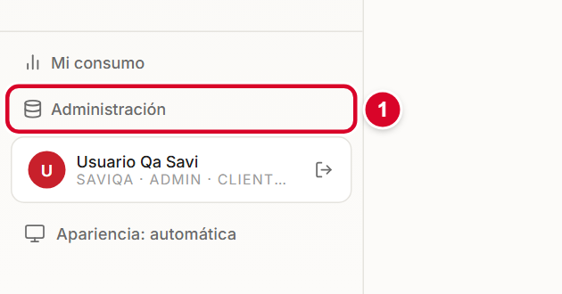
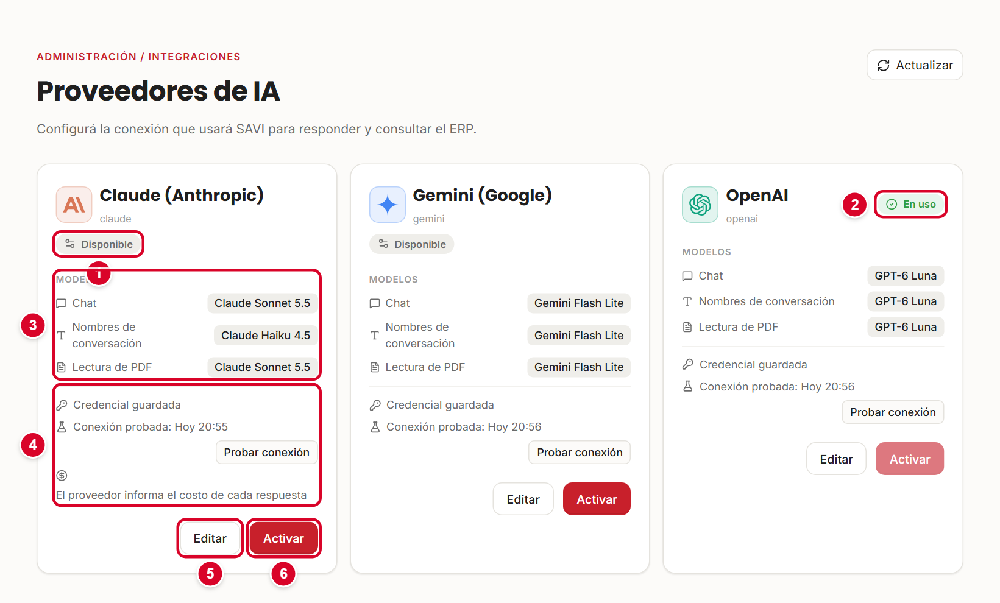
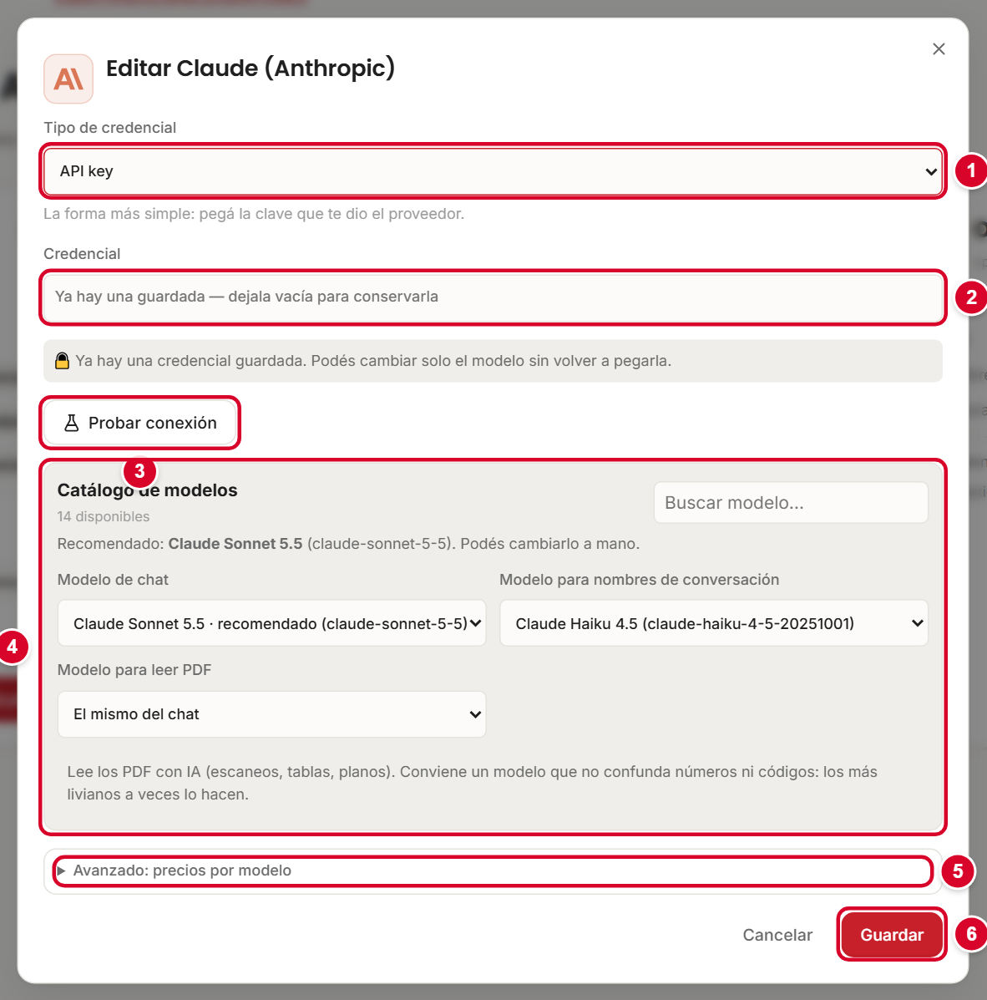
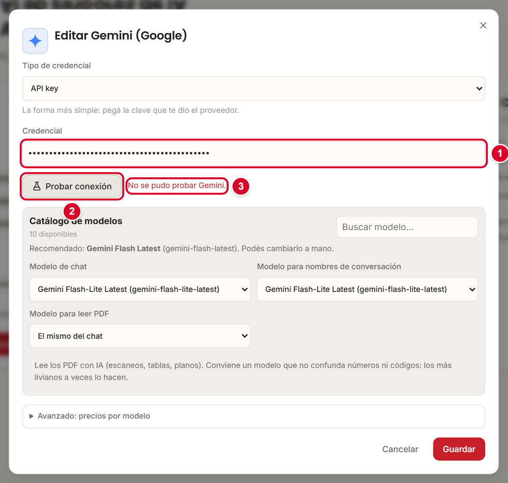
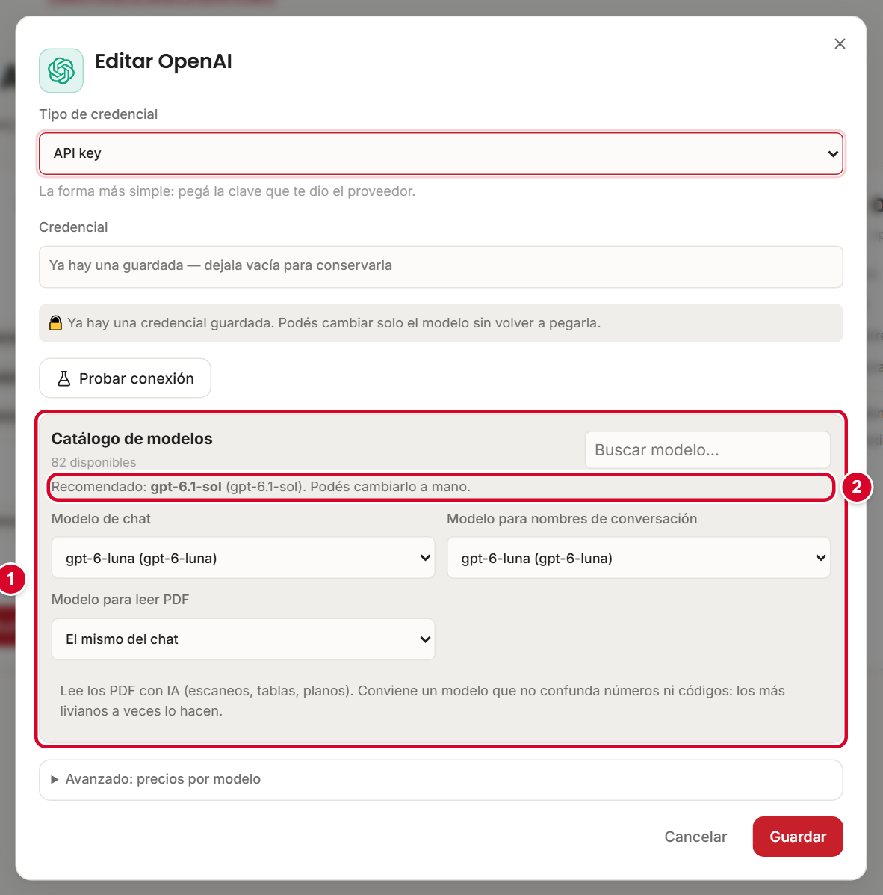
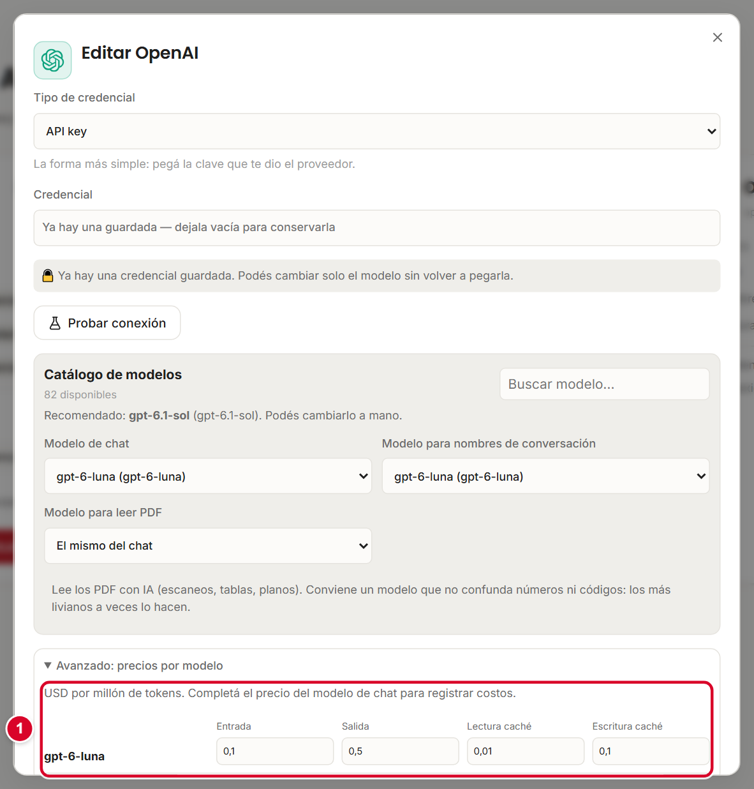
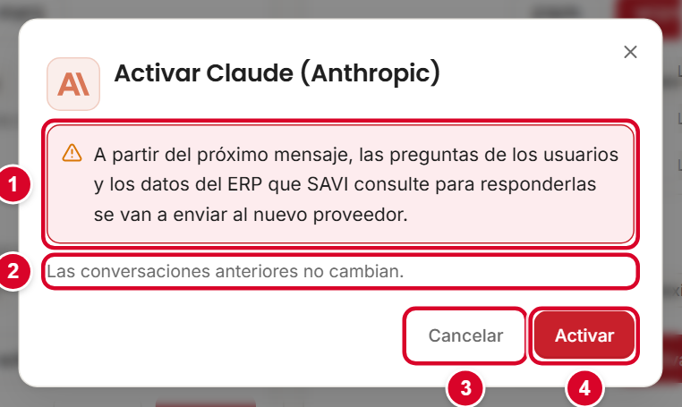

Qué vas a encontrar
Tocá o hacé clic en un título para ir directo a esa parte.
- 1. Qué es un proveedor de IA y por qué SAVI necesita uno
- 2. Los tres proveedores disponibles
- 3. Dónde conseguir la clave de cada proveedor
- 4. La pantalla Proveedores de IA
- 5. Configurar un proveedor paso a paso
- 6. Elegir los modelos
- 7. Avanzado: precios por modelo
- 8. Activar un proveedor y cambiar de proveedor
- 9. Qué pasa si se acaban los créditos o se alcanzan los límites
- 10. Recomendaciones de seguridad
- 11. Resolución de problemas
1. Qué es un proveedor de IA y por qué SAVI necesita uno
SAVI no tiene "cerebro" propio. Para entender las preguntas y redactar las respuestas usa un servicio de inteligencia artificial de una empresa externa. A esa empresa la llamamos proveedor de IA.
El proveedor se conecta con SAVI mediante una clave (también llamada API key): un texto largo y secreto que funciona como una contraseña. Con esa clave el proveedor sabe a qué cuenta cobrarle el uso. Sin un proveedor configurado y activo, SAVI no puede responder.
Los proveedores cobran por uso. Las claves de API funcionan con saldo prepago (créditos): si la cuenta del proveedor no tiene saldo, SAVI deja de responder aunque la clave sea correcta. Antes de configurar, confirmá que la cuenta tenga créditos cargados.
Esta guía es para quien administra SAVI. La pantalla Proveedores de IA es del administrador de la instalación: si tu usuario no es de ese nivel, no vas a poder entrar.
2. Los tres proveedores disponibles
SAVI trae tres proveedores listos para configurar. Solo uno está en uso a la vez.
| Proveedor | Modelo para chat | Modelo para nombres de conversación | Costo relativo | Para quién |
|---|---|---|---|---|
| Claude (Anthropic) | Claude Sonnet 5.5 | Claude Haiku 4.5 | El más alto de los tres | Quien ya tiene una cuenta de Claude o prioriza esta calidad de redacción. Informa el costo real de cada respuesta. |
| Gemini (Google) | Gemini Flash Lite | Gemini Flash Lite | Intermedio | Quien ya trabaja con Google o quiere una opción económica y rápida. |
| OpenAI | GPT-6 Luna | GPT-6 Luna | El más económico | Opción recomendada por defecto: mejor relación entre costo y calidad. |
Los modelos de la tabla son los que vienen configurados en esta instalación; podés cambiarlos (sección 6). La columna de costo es una comparación relativa basada en el consumo medido dentro de SAVI; los precios reales los define cada proveedor y cambian con el tiempo.
Si no tenés una razón para elegir otro, empezá con OpenAI (GPT-6 Luna): es el más económico de los tres. Después podés cambiar cuando quieras (sección 8).
Además del chat, el proveedor activo se usa para dos tareas más: poner nombre a las conversaciones y leer PDF escaneados cuando importás conocimiento (manual 04).
3. Dónde conseguir la clave de cada proveedor
| Proveedor | Dónde se obtiene | Detalle |
|---|---|---|
| OpenAI | platform.openai.com → | Iniciá sesión, creá una clave nueva y copiala en el momento: después no se vuelve a mostrar completa. Cargá saldo en la sección de facturación (Billing). |
| Gemini (Google) | Google AI Studio → | Entrá con una cuenta de Google, creá la clave y copiala. Para uso empresarial, asegurate de tener activa la facturación del proyecto. |
| Claude (Anthropic) | console.anthropic.com → | Creá la clave y cargá créditos en la sección de facturación. Claude también permite usar una sesión de Claude iniciada en la PC o un token de cuenta (ver más abajo). |
Una clave nueva sin saldo no funciona. Si la prueba de conexión dice que la cuenta no tiene créditos, cargá saldo en la página del proveedor y volvé a probar.
Claude: tres formas de conectarse
Al editar Claude, el campo Tipo de credencial ofrece estas opciones:
| Opción | Qué es |
|---|---|
| API key | La clave de la consola de Anthropic. Es la forma más simple: pegás la clave que te dio el proveedor. |
| Token OAuth | Un token generado con el comando claude setup-token, a partir de una cuenta de Claude. |
| Sesión de Claude en este equipo | Usa la sesión de Claude iniciada en esta PC. No hace falta pegar nada. Si la sesión vence, se renueva abriendo Iniciar sesión en Claude desde el menú Inicio. |
Gemini y OpenAI se conectan solo con API key. Durante la instalación, solo se pregunta por Claude; Gemini y OpenAI se configuran después, desde SAVI.
4. La pantalla Proveedores de IA
- Entrá a SAVI con un usuario administrador.
- En el menú de la izquierda tocá Administración 1.
- En el menú de administración elegí Proveedores de IA.

Vas a ver una tarjeta por proveedor. Cada tarjeta muestra:

- 1Estado. Aquí dice Disponible: el proveedor está configurado y se puede activar.
- 2En uso. Es el proveedor que SAVI está usando ahora para responder.
- 3Modelos. Qué modelo usa cada tarea: Chat, Nombres de conversación y Lectura de PDF.
- 4Credencial y prueba. Dice si hay una credencial guardada y cuándo se probó la conexión por última vez. El botón Probar conexión hace la prueba con lo ya guardado.
- 5Editar (o Configurar, si todavía no se configuró): abre el formulario.
- 6Activar. Pone a ese proveedor en uso.
Los estados posibles
| Estado | Qué significa |
|---|---|
| En uso | SAVI responde con este proveedor. |
| Disponible | Está configurado (tiene credencial y modelos), pero no es el que se usa. |
| Sin configurar | Falta cargar la credencial o los modelos. El botón Activar está deshabilitado. |
| Credencial ilegible | La credencial guardada no se pudo leer (por ejemplo, tras restaurar una copia). Volvé a pegar la clave. |
| Próximamente | El proveedor aún no está disponible. |
El botón Actualizar (arriba a la derecha) vuelve a leer el estado de todas las tarjetas.
5. Configurar un proveedor paso a paso
Estos pasos sirven para los tres proveedores. Las pantallas de ejemplo son de Claude, Gemini y OpenAI.
- En la tarjeta del proveedor tocá Configurar (o Editar si ya estaba configurado). Se abre el formulario.
- En Tipo de credencial 1 elegí API key (salvo que uses las opciones especiales de Claude).
- En Credencial 2 pegá la clave. Se muestra con puntos para que nadie la lea por encima del hombro.
- Al pegar la clave, SAVI trae solo la lista de modelos del proveedor. También podés tocar Probar conexión 3.
- Elegí los modelos 4: Modelo de chat, Modelo para nombres de conversación y Modelo para leer PDF (sección 6).
- Si hace falta, abrí Avanzado: precios por modelo 5 (sección 7).
- Tocá Guardar 6.
- De vuelta en la tarjeta, tocá Probar conexión. Debe aparecer La conexión funciona.
- Recién entonces, si querés usarlo, tocá Activar (sección 8).

Si el proveedor ya tiene una credencial guardada, no hace falta volver a pegarla para cambiar solo el modelo. Dejá el campo vacío y la clave actual se conserva.
Probar la conexión
Probar conexión verifica que la clave sea válida y que la cuenta pueda usar el proveedor, sin guardar nada. Estos son los resultados más comunes:
| Mensaje | Qué significa | Qué hacer |
|---|---|---|
| La API key de OpenAI es válida. Elegí un modelo de la lista. | Todo bien. | Elegí los modelos y guardá. |
| La API key de Gemini es válida. | Todo bien. | Elegí los modelos y guardá. |
| La credencial de Claude es válida. Elegí un modelo de la lista. | Todo bien. | Elegí los modelos y guardá. |
| La API key de … no es válida o no tiene permisos. | La clave está mal copiada, fue revocada o no corresponde al proveedor. | Copiá de nuevo la clave desde la consola del proveedor, sin espacios al principio ni al final. |
| No se pudo probar Gemini. | Gemini rechazó la prueba (clave inválida o incompleta). | Revisá la clave y volvé a probar. |
| La cuenta de OpenAI no tiene créditos. Cargá saldo en la plataforma de OpenAI para poder usar el chat. | La clave es correcta, pero la cuenta no tiene saldo. | Cargá saldo en la página del proveedor. |
| OpenAI rechazó la solicitud por límite de uso. Intentá de nuevo. | Se superó un límite de pedidos por minuto o por día. | Esperá unos minutos y probá otra vez. |
| El modelo '…' no está disponible para esta cuenta. Elegí otro de la lista. | La cuenta no tiene acceso a ese modelo. | Elegí otro modelo del catálogo. |
| … no respondió a tiempo. Revisá la conexión a internet. / No se pudo conectar con … Revisá la conexión a internet. | El equipo no llega al proveedor. | Revisá internet, proxy o firewall del servidor donde corre SAVI. |

6. Elegir los modelos
Un modelo es la "versión" de la inteligencia artificial que responde. Los hay más potentes y caros, y más livianos y baratos. SAVI usa tres:
| Campo | Para qué se usa |
|---|---|
| Modelo de chat | Responder las preguntas de los usuarios. Es el que más consume. |
| Modelo para nombres de conversación | Ponerle título a cada conversación. Alcanza con uno liviano. |
| Modelo para leer PDF | Leer con IA los PDF escaneados al importar conocimiento. Si lo dejás en El mismo del chat, usa el modelo de chat. |

El Catálogo de modelos muestra cuántos modelos tiene disponibles la cuenta y un buscador para encontrar uno por nombre. La etiqueta Recomendado es una sugerencia automática basada en el modelo más reciente del catálogo; no tiene en cuenta el costo. Para uso diario en la mayoría de las empresas conviene el modelo económico indicado en la sección 2 (GPT-6 Luna en OpenAI).
El modelo para leer PDF conviene que sea uno que no confunda números ni códigos. Los modelos más livianos a veces los confunden en fichas técnicas escaneadas. Si vas a importar muchos PDF escaneados, probá primero con unos pocos.
Si el proveedor no entrega una lista (puede pasar con la sesión local de Claude), los campos pasan a ser de texto: escribí el identificador del modelo. El campo ofrece sugerencias.
- Pegá la clave del proveedor para poder guardar. Falta la credencial.
- Elegí el modelo que usará el chat. / Elegí el modelo para nombrar las conversaciones. Completá los campos marcados en rojo.
7. Avanzado: precios por modelo
SAVI muestra en la pantalla Consumo cuánto cuesta cada respuesta. Para eso necesita saber el precio de los modelos:
- Claude informa el costo real de cada respuesta: no hay que cargar precios.
- Gemini y OpenAI no lo informan: SAVI lo calcula con la tabla de precios que cargues acá.

La tabla pide cuatro valores por modelo, en USD por millón de tokens (un token es un pedacito de texto, aproximadamente una sílaba):
| Campo | Qué es |
|---|---|
| Entrada | Lo que cuesta el texto que SAVI le envía al modelo (la pregunta y los datos). |
| Salida | Lo que cuesta el texto que el modelo escribe de vuelta. |
| Lectura caché / Escritura caché | Precios cuando el proveedor reutiliza información que ya había procesado. |
Copiá estos valores de la página de precios oficial de tu proveedor. Si el modelo de chat activo no tiene precio, la tarjeta muestra el aviso "Falta el precio de …: las respuestas se van a guardar sin costo", y el costo real será mayor al que muestra la pantalla de consumo.
8. Activar un proveedor y cambiar de proveedor
- Verificá que la tarjeta diga Disponible y que la prueba de conexión sea correcta.
- Tocá Activar en esa tarjeta.
- Si ya había otro proveedor en uso, SAVI muestra un aviso de privacidad. Leelo y confirmá con Activar 4, o cancelá con Cancelar 3.

Qué cambia y qué no cambia
| Cambia | No cambia |
|---|---|
| A partir del próximo mensaje, las preguntas de los usuarios y los datos del ERP que SAVI consulte para responderlas se envían al nuevo proveedor. | Las conversaciones anteriores quedan como estaban: nada se borra ni se reescribe. |
| El nombre de las conversaciones nuevas y la lectura de PDF pasan a usar los modelos del nuevo proveedor. | Los documentos ya cargados y los permisos de los usuarios. |
| El costo se calcula con la tabla del nuevo proveedor. | Los usuarios no tienen que hacer nada: siguen usando SAVI igual. |
Los datos viajan al proveedor activo. Antes de cambiar, asegurate de que la empresa esté de acuerdo con las condiciones de uso de datos del nuevo proveedor.
9. Qué pasa si se acaban los créditos o se alcanzan los límites
Cuando el proveedor rechaza un pedido, los usuarios y los administradores ven mensajes distintos:
- Usuarios comunes ven siempre: "El asistente no está disponible en este momento. Avisale a tu administrador." No ven detalles técnicos.
- Administradores ven el motivo exacto y qué hacer.
| Mensaje (lo ve el administrador) | Causa | Qué hacer |
|---|---|---|
| La cuenta de OpenAI no tiene créditos. Un administrador debe cargar saldo en la plataforma para que el asistente pueda responder. | Se acabó el saldo prepago. | Cargar saldo en la plataforma de OpenAI. Normalmente se retoma solo, sin reiniciar SAVI. |
| La cuenta de Gemini no tiene créditos. Un administrador debe cargar saldo en Google AI Studio… | Se acabó el saldo. | Cargar saldo en Google AI Studio. |
| La cuenta de Anthropic (Claude) no tiene créditos. Un administrador debe cargar saldo en la consola de Anthropic… | Se acabó el saldo. | Cargar saldo en console.anthropic.com. |
| Se agotó la cuota diaria de Gemini para los modelos configurados. Se renueva mañana; para seguir hoy, un administrador puede subir el plan en Google AI Studio o activar otro proveedor. | Se alcanzó el tope diario del plan gratuito o inicial. | Subir el plan o activar otro proveedor. |
| La API key de … no es válida o no tiene permisos. Revisá la configuración del proveedor… | La clave fue revocada, cambiada o venció. | Pegar una clave nueva en Editar. |
| La credencial de Claude venció o no es válida. Para renovarla, abrí 'Iniciar sesión en Claude' desde el menú Inicio… | Venció la sesión de Claude en la PC. | Seguir el mensaje, o cambiar a una API key. |
| Claude está recibiendo demasiadas solicitudes en este momento. Probá de nuevo en unos minutos. | Límite de pedidos por minuto. | Esperar unos minutos. |
En la pantalla Conocimiento de la empresa, si un PDF no se pudo leer por falta de saldo, aparece "Revisá el proveedor de IA". Cuando resolvés el problema, usá Reintentar todos o Leer con IA en cada documento.
Para evitar cortes sorpresivos, activá en la cuenta del proveedor un aviso por saldo bajo y revisá el consumo en Administración → Consumo.
10. Recomendaciones de seguridad
- No compartas la clave por chat ni por correo. Si hay que pasarla, hacelo en persona o por un gestor de contraseñas.
- Una clave por entorno. Usá claves distintas para pruebas y para producción: así podés revocar una sin afectar la otra.
- Rotá la clave después de la etapa piloto o de pruebas. Creá una nueva, pegala en SAVI y revocá la vieja en la consola del proveedor.
- Nunca pegues una clave en capturas, tickets o documentos. Si una clave se mostró, revocala.
- Poné un tope de gasto en la cuenta del proveedor.
- SAVI guarda las credenciales cifradas y nunca las vuelve a mostrar completas en pantalla.
11. Resolución de problemas
| Problema | Posible causa | Solución |
|---|---|---|
| El botón Activar está deshabilitado | Falta la credencial o los modelos, o el proveedor ya está en uso. | Abrí Configurar, completá y guardá. Al pasar el mouse sobre el botón se ve el motivo. |
| "No se pudo probar …" o "no es válida o no tiene permisos" | Clave mal copiada, con espacios o revocada. | Generá y pegá una nueva. |
| Dice que no tiene créditos y acabo de cargar | El saldo puede demorar unos minutos en verse, o la clave es de otra cuenta. | Esperá y probá de nuevo; verificá que la clave sea de la cuenta que cargaste. |
| El catálogo de modelos no aparece | El proveedor no lo devolvió o no hay conexión. | Escribí el identificador del modelo a mano o revisá internet. |
| Estado "Credencial ilegible" | La credencial no se puede descifrar. | Editá el proveedor y pegá la clave otra vez. |
| Los usuarios ven "El asistente no está disponible" | Falla de clave, saldo o límite del proveedor activo. | Entrá como administrador y mirá el mensaje exacto al hacer una pregunta; seguí la tabla de la sección 9. |
| Cambié de proveedor y las respuestas cambiaron de estilo | Cada modelo redacta distinto. | Es esperable. Si no te convence, volvé a activar el anterior. |
| El costo en Consumo parece menor al real | Falta el precio del modelo. | Cargalo en Avanzado: precios por modelo. |